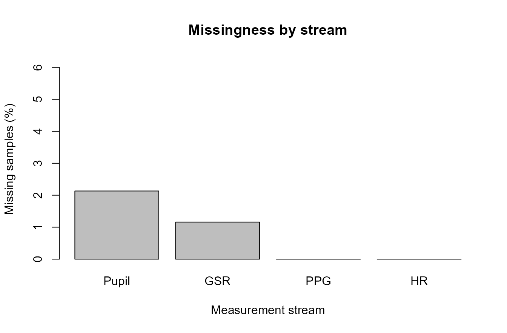
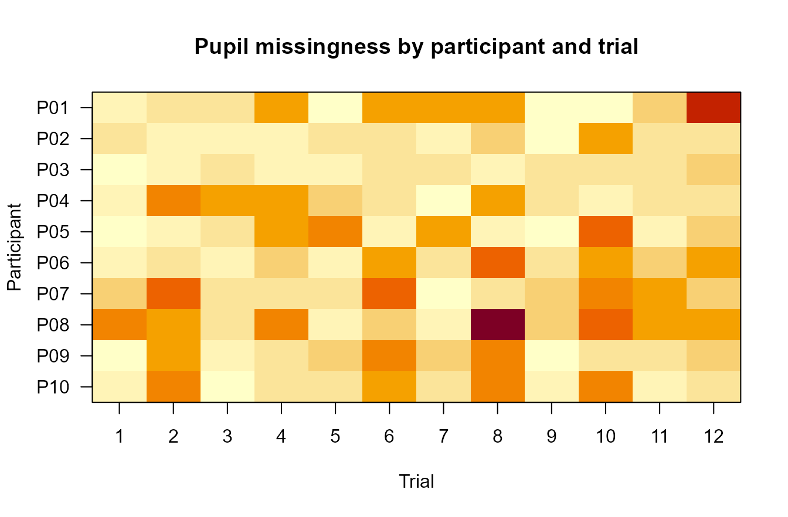
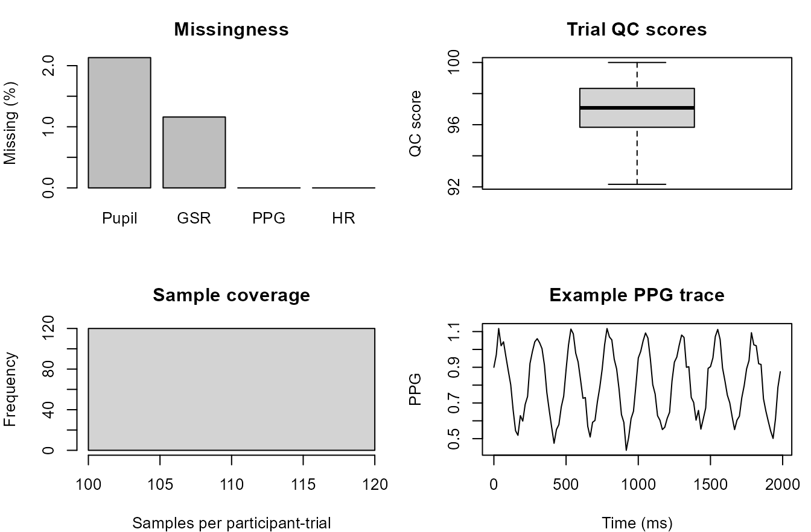

Visual QC dashboard workflow
Source:vignettes/articles/visual-qc-dashboard-workflow.Rmd
visual-qc-dashboard-workflow.RmdPurpose
This article demonstrates a compact visual quality-control dashboard
workflow for gpbiometrics projects.
The goal is to show how synthetic Gazepoint-like biometric streams can be summarized visually before modelling or reporting. The plots are diagnostic and reproducibility-oriented. They should not be interpreted as direct evidence of emotion, stress, attention, workload, health status, clinical state, diagnosis, or psychological response.
Synthetic biometric stream
The example uses synthetic data so that the article is reproducible and does not depend on private recordings.
participants <- sprintf("P%02d", 1:10)
trials <- seq_len(12)
samples_per_trial <- 120
dat <- expand.grid(
participant_id = participants,
trial_id = trials,
sample_id = seq_len(samples_per_trial),
KEEP.OUT.ATTRS = FALSE,
stringsAsFactors = FALSE
)
dat$time_ms <- (dat$sample_id - 1) * 16.67
dat$condition <- ifelse(dat$trial_id %% 2 == 0, "dense", "simple")
dat$session <- ifelse(match(dat$participant_id, participants) <= 5, "morning", "afternoon")
participant_offset <- match(dat$participant_id, participants) / 30
trial_offset <- dat$trial_id / 80
phase <- dat$sample_id / samples_per_trial
dat$pupil_mm <- 3.1 + participant_offset + 0.15 * sin(2 * pi * phase) + rnorm(nrow(dat), 0, 0.05)
dat$gsr_us <- 1.4 + trial_offset + 0.08 * cos(2 * pi * phase) + rnorm(nrow(dat), 0, 0.03)
dat$ppg <- 0.8 + 0.25 * sin(2 * pi * phase * 8) + rnorm(nrow(dat), 0, 0.04)
dat$hr_bpm <- 72 + 3 * sin(2 * pi * phase) + participant_offset * 8 + rnorm(nrow(dat), 0, 1.2)
p_miss <- 0.015 + 0.008 * (dat$condition == "dense") + 0.006 * (dat$session == "afternoon")
g_miss <- 0.010 + 0.006 * (dat$trial_id > 8)
p_bad <- runif(nrow(dat)) < p_miss
g_bad <- runif(nrow(dat)) < g_miss
dat$pupil_mm[p_bad] <- NA_real_
dat$gsr_us[g_bad] <- NA_real_
head(dat)
#> participant_id trial_id sample_id time_ms condition session pupil_mm
#> 1 P01 1 1 0 simple morning 3.097821
#> 2 P02 1 1 0 simple morning 3.144532
#> 3 P03 1 1 0 simple morning 3.204355
#> 4 P04 1 1 0 simple morning 3.228096
#> 5 P05 1 1 0 simple morning 3.221588
#> 6 P06 1 1 0 simple afternoon 3.250713
#> gsr_us ppg hr_bpm
#> 1 1.514457 0.8998425 72.07261
#> 2 1.501487 0.9214411 73.30496
#> 3 1.439351 0.8608654 75.14891
#> 4 1.501778 0.9003959 72.20211
#> 5 1.488959 0.8635617 73.06830
#> 6 1.538060 0.8921006 74.12209Channel-level missingness
The first plot summarizes sample-level missingness by measurement stream. This is a coverage check, not a substantive result.
channel_missing <- data.frame(
channel = c("Pupil", "GSR", "PPG", "HR"),
missing_percent = c(
mean(is.na(dat$pupil_mm)) * 100,
mean(is.na(dat$gsr_us)) * 100,
mean(is.na(dat$ppg)) * 100,
mean(is.na(dat$hr_bpm)) * 100
)
)
barplot(
channel_missing$missing_percent,
names.arg = channel_missing$channel,
ylim = c(0, max(5, channel_missing$missing_percent) * 1.25),
ylab = "Missing samples (%)",
xlab = "Measurement stream",
main = "Missingness by stream"
)
Synthetic channel-level missingness summary.
Participant-by-trial coverage
A participant-by-trial heatmap helps identify concentrated gaps that may not be visible from a global percentage.
pt_missing <- aggregate(
is.na(dat$pupil_mm),
by = list(participant_id = dat$participant_id, trial_id = dat$trial_id),
FUN = mean
)
names(pt_missing)[3] <- "pupil_missing_rate"
miss_matrix <- xtabs(pupil_missing_rate * 100 ~ participant_id + trial_id, pt_missing)
image(
x = as.integer(colnames(miss_matrix)),
y = seq_len(nrow(miss_matrix)),
z = t(miss_matrix[nrow(miss_matrix):1, ]),
axes = FALSE,
xlab = "Trial",
ylab = "Participant",
main = "Pupil missingness by participant and trial"
)
axis(1, at = as.integer(colnames(miss_matrix)), labels = colnames(miss_matrix))
axis(2, at = seq_len(nrow(miss_matrix)), labels = rev(rownames(miss_matrix)), las = 1)
box()
Synthetic participant-by-trial pupil missingness heatmap.
Signal activity over time
Time-course displays are useful for checking whether streams are present and whether the plotted signal has plausible continuity in the exported file.
one_trial <- dat[dat$participant_id == "P01" & dat$trial_id == 1, ]
op <- par(mfrow = c(3, 1), mar = c(3.5, 4, 2, 1))
plot(one_trial$time_ms, one_trial$pupil_mm, type = "l", xlab = "Time (ms)", ylab = "Pupil (mm)", main = "Pupil stream")
plot(one_trial$time_ms, one_trial$gsr_us, type = "l", xlab = "Time (ms)", ylab = "GSR (uS)", main = "GSR stream")
plot(one_trial$time_ms, one_trial$ppg, type = "l", xlab = "Time (ms)", ylab = "PPG", main = "PPG stream")Synthetic signal activity for one participant-trial segment.
par(op)Trial-level quality score
A simple quality score can help order trial-level review. The score below is only a synthetic demonstration of a QC index.
pupil_miss <- aggregate(is.na(dat$pupil_mm), by = list(participant_id = dat$participant_id, trial_id = dat$trial_id, condition = dat$condition), FUN = mean)
names(pupil_miss)[4] <- "pupil_missing"
gsr_miss <- aggregate(is.na(dat$gsr_us), by = list(participant_id = dat$participant_id, trial_id = dat$trial_id), FUN = mean)
names(gsr_miss)[3] <- "gsr_missing"
qc <- merge(pupil_miss, gsr_miss, by = c("participant_id", "trial_id"))
qc$qc_score <- pmax(0, 100 - 100 * qc$pupil_missing - 80 * qc$gsr_missing)
boxplot(
qc_score ~ condition,
data = qc,
ylim = c(0, 105),
ylab = "QC score",
xlab = "Synthetic condition",
main = "Trial-level QC score"
)
stripchart(qc_score ~ condition, data = qc, vertical = TRUE, method = "jitter", pch = 16, add = TRUE)Synthetic trial-level QC score by condition.
Compact QC dashboard
A dashboard view can combine missingness, trial-level scores, timing coverage, and selected stream traces into one report-oriented display.
trial_counts <- aggregate(sample_id ~ participant_id + trial_id, dat, length)
names(trial_counts)[3] <- "n_samples"
op <- par(mfrow = c(2, 2), mar = c(4, 4, 3, 1))
barplot(
channel_missing$missing_percent,
names.arg = channel_missing$channel,
ylab = "Missing (%)",
main = "Missingness"
)
boxplot(
qc$qc_score,
ylab = "QC score",
main = "Trial QC scores"
)
hist(
trial_counts$n_samples,
xlab = "Samples per participant-trial",
main = "Sample coverage",
breaks = 10
)
plot(
one_trial$time_ms,
one_trial$ppg,
type = "l",
xlab = "Time (ms)",
ylab = "PPG",
main = "Example PPG trace"
)
Compact synthetic visual QC dashboard.
par(op)Relation to gpbiometrics helpers
The same reporting pattern can be paired with package-level helpers when the project data use the expected column contracts.
| task | representative_helpers |
|---|---|
| Missingness review | summarize_gazepoint_missingness(); plot_gazepoint_missingness() |
| Signal-quality review | summarize_gazepoint_signal_quality(); plot_gazepoint_signal_quality() |
| Activity and timebase review | audit_gazepoint_signal_activity(); audit_gazepoint_time_resets() |
| Dashboard reporting | create_gazepoint_quality_dashboard(); plot_gazepoint_biometric_report_dashboard() |
| Decision logging | create_gazepoint_analysis_decision_log(); write_gazepoint_decision_log() |
library(gpbiometrics)
missingness <- summarize_gazepoint_missingness(
biometric_data,
group_cols = c("participant_id", "trial_id")
)
plot_gazepoint_missingness(missingness)
signal_quality <- summarize_gazepoint_signal_quality(
biometric_data,
participant_col = "participant_id",
trial_col = "trial_id"
)
plot_gazepoint_signal_quality(signal_quality)
activity <- audit_gazepoint_signal_activity(
biometric_data,
time_col = "TIME_MS",
participant_col = "participant_id",
trial_col = "trial_id"
)
plot_gazepoint_signal_activity(activity)Reporting recommendation
For manuscripts, technical supplements, and reviewer-facing reports, describe these figures as QC, timing, coverage, signal-processing, or reproducibility displays. Stronger substantive interpretation should be reserved for designs with appropriate validation, controls, and modelling evidence.